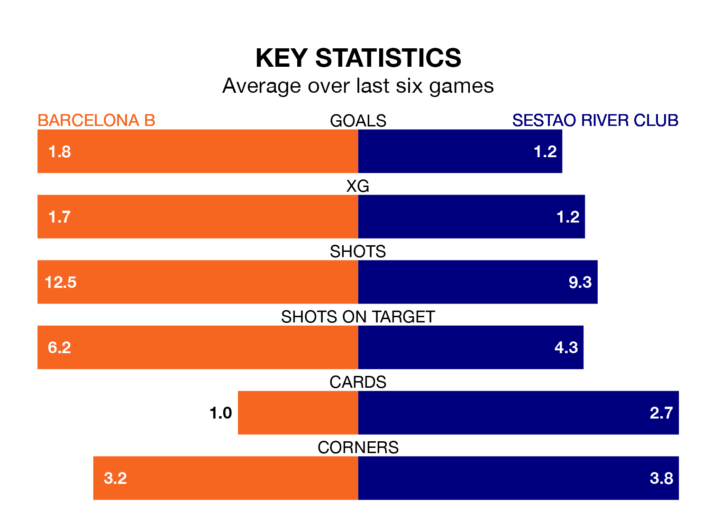

Struggling Sestao River Club face Barcelona B away at Mini Estadi on Saturday looking to build on a win in their last league outing.
After securing all three points with a 3-0 victory over CE Sabadell on March 3, Sestao River Club sit 17th in Primera Division RFEF Group 1.
They travel to play a Barcelona B side fifth in the standings, who were held in their last match, 0-0 against Real Unión.
With 38 goals in 26 games so far this season, Barcelona B are the league's third-highest scorers with 1.5 goals per game. And they are conceding at an average rate, letting in 26 goals at a rate of 1.0 per game.
Sestao River Club, meanwhile, are below average scorers, with 0.7 goals per game, compared to a league average of 1.0. They have conceded 1.3 goals per game.
In Pau Victor, the home team have the league's sharpest shooter so far this season. He has notched 12 goals in 21 appearances.
His goal rate of one every 157 minutes is much quicker than that of Aitor Aranzabe Etxabe, the visitors' top scorer with a goal every 373 minutes, and a total of five goals in 24 games.
Barcelona B are in good form in Primera Division RFEF Group 1, with four wins and two draws from their last six games.
With two wins and two draws over that period, Sestao River Club's form is much worse – they have taken eight points from 18, compared to Barcelona B's 14.
Updated: 09:34 (UTC), 08/03/24